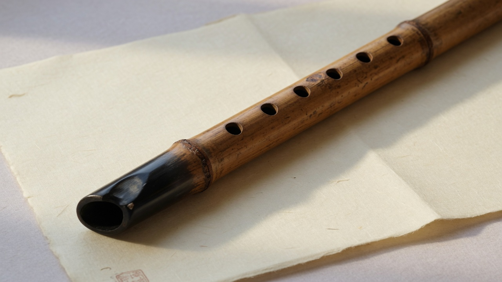
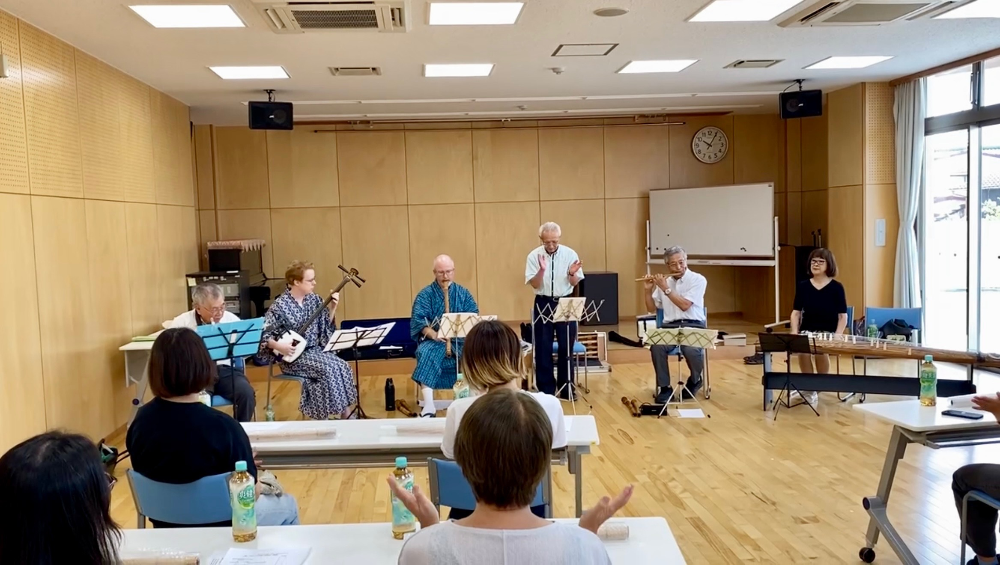
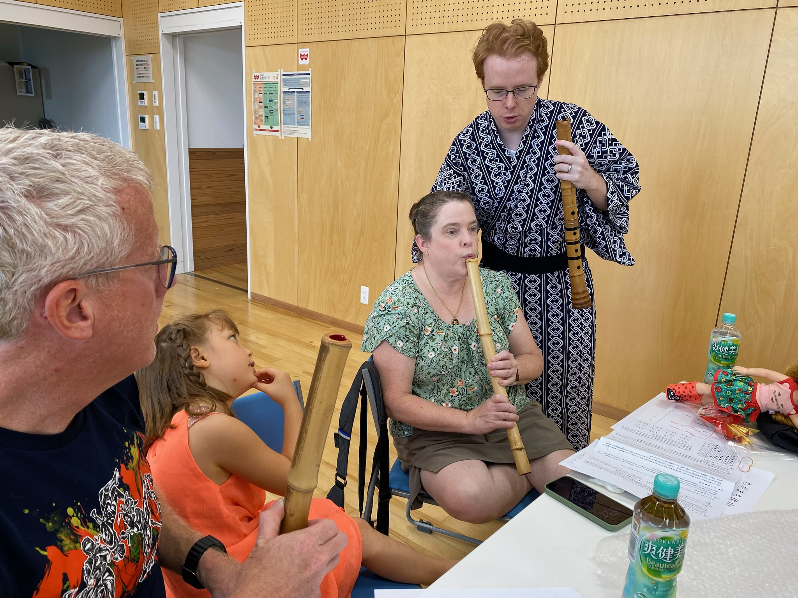
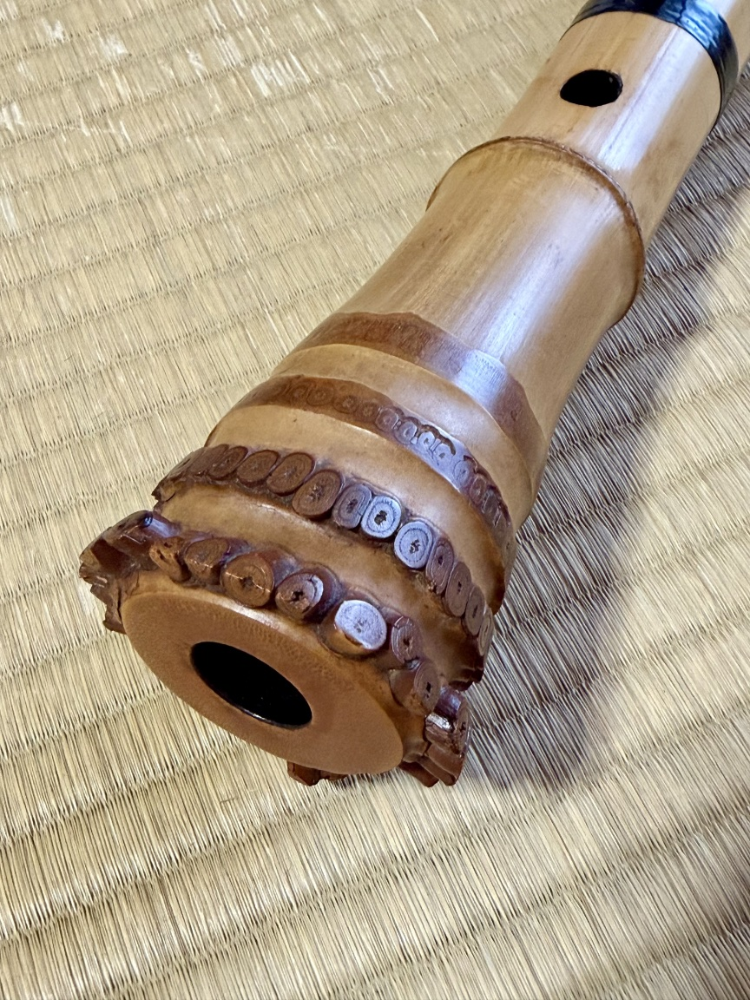
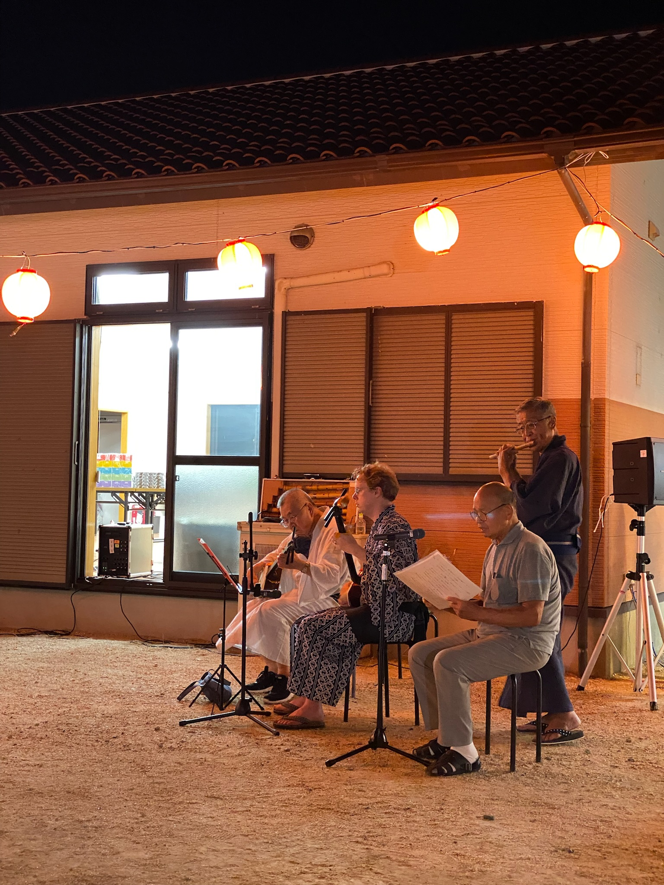
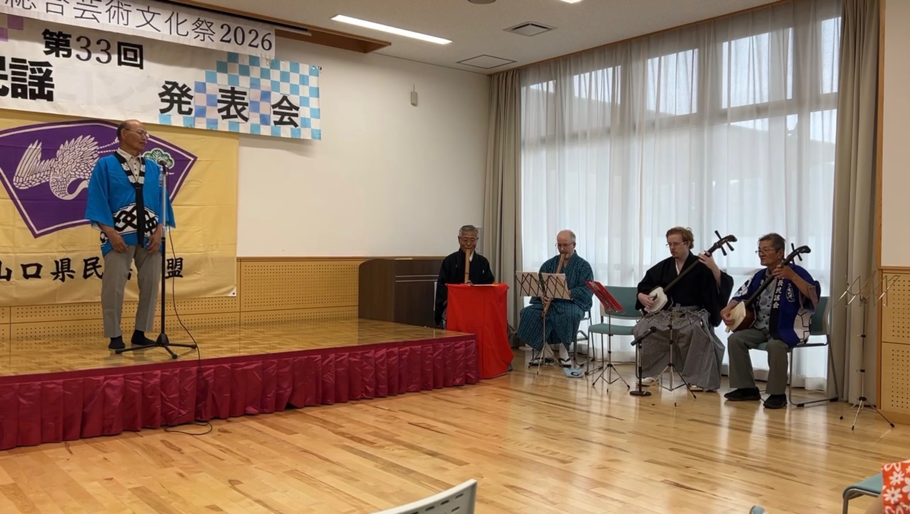

音が出なくても、楽譜が読めなくても大丈夫です。いちばん大切なのは、吹いてみたい気持ちです。

ABOUT
習って終わりではない教室
山口市佐山で、尺八を気軽に始められる教室です。楽器をお持ちでなくても大丈夫。入門用の手作り尺八をご用意しています。地域のお祭り、コンクール、文化交流で、実際に演奏する機会もあります。
入門用の手作り尺八を5,000円からご用意しています。用意できるまで待たなくて構いません。
レッスン室の中だけで終わりません。祭りや文化交流で、一緒に音を出すことを大切にしています。


LESSONS
レッスン案内
毎週通いやすい土曜日の午後。月謝は気軽に続けられる金額にしています。
- 日時
- 毎週土曜 13:00〜
- 月謝
- 4,000円
- 個人レッスン
- 1回 1,000円
- 場所
- 山口市佐山
BEGINNERS
初めての方へ
尺八は難しい、年を取ってからでは遅い、楽器を持っていない。その心配は、たいてい先に解けます。
尺八って難しいですか？
最初は音を出すだけで十分です。焦らず、息の感じを一緒に探していきます。子どもから、60代・70代の方まで通っています。
楽器を持っていなくてもいいですか？
はい。入門用の手作り尺八を5,000円からご用意しています。まずは体験して、合ってからで構いません。
音が出なくても大丈夫ですか？
大丈夫です。最初は誰でも、息が外に逃げるものです。音が鳴った瞬間の楽しさを、教室で共有したいと思っています。
何歳から通えますか？
特に上限はありません。今の教室には60代・70代の生徒もいます。若い方、初めての方も大歓迎です。
どんな曲を吹きますか？
基礎の息と指づかいから始め、古典や親しみやすい曲へ進みます。無理に難しい曲へ急がせる教室ではありません。
発表の場はありますか？
あります。地域のお祭り、コンクール、文化交流など、人前で吹く機会を大切にしています。出たくなったときに、出られます。

INSTRUMENTS
入門用手作り尺八
「吹いてみたいけれど、楽器を持っていない。」その一歩目を、高くしないようにしています。入門用の手作り尺八は5,000円から。教室で相談しながら選べます。
入門用手作り尺八 5,000円〜
楽器について聞くPERFORM
音を、地域へ。
佐山で始める。仲間と練習する。地域のお祭りで演奏する。コンクールや文化交流にも参加する。教室の外に、小さな舞台を用意したいと思っています。
- 地域のお祭り
- コンクール
- 文化交流
- ミニ演奏会


ACCESS
山口市佐山
JR宇部線・周防佐山駅の近くです。詳しい会場は、お申し込みのときにご案内します。
CONTACT
見学・体験歓迎
まずは一度、音を聞きに来てください。見学だけでも、少し吹いてみるだけでも構いません。
- LINE
- 友だち追加
電話・メール・LINEは、公開の前にこの欄へ載せます。見学と体験は歓迎しています。
先生と連絡先・会場が決まり次第、すぐにお知らせできる形にします。